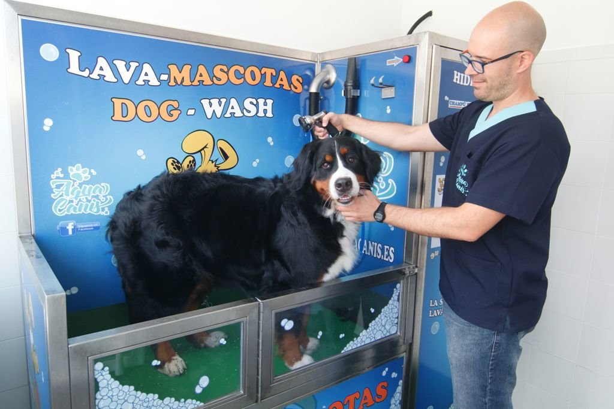

EL LAVADERO DE ADRIAN
OLVIDATE DE LA INCOMODIDAD DE LAVAR TU PERRO EN CASA
OFRECEMOS UN SERVICIO COMPLETO CON NUESTRAS MAQUINAS DE AUTOLAVADO Y TODO TIPO DE PRODUCTOS Y COMPLEMENTOS
En EL LAVADERO DE ADRIAN sabemos lo importamte que son las mascotas para vosostros. Son una parte mas de la familia y como tal hay que dedicarle el tiempo y cuidado que se merecen. Para una convivencia higienica y segura creemos que es fundamental lavar a nuestra mascota con regularidad. Ofrecemos diferentes servicios y tipos de lavado para todo tipo de animales.
Pensadas para que nuestras mascotas disfruten de una experiencia relajante
Sabemos que muchas veces es dificil lavar a nuestro perro en casa. no suelen estar comodos, se mueven y acabamos ensuciando mucho. Otra razón mas para que traigas a tu mascota al lavadero de adrian donde nosotros ponemos todo a vuestra disposicion agua champu antiparasitarios y un secado para que vuestro can salga echo un pincel. Informate sobre nuestros tipos de lavado, rellena el forulario de contacto para reservar un, acceder a promociones o hacernos cualquier consulta. Os esperamos